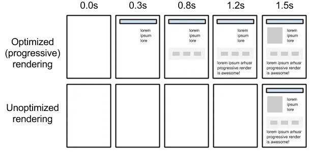

Short answer
The critical rendering path is the set of files the browser needs before it can paint the first content.
Typically that is the HTML, the CSS that styles the first screen, and any script without defer or async in the head. Images can wait if they are not required for that first paint, but a script that blocks parsing holds the whole path. SEO Health lists what is on the path for the template. It does not turn the list into a rank.
Definition
The progressive-rendering figure shows content appearing as the path clears. It is an illustration of order, not a filmstrip of this site. A long path means the first byte of HTML can be fast and the first paint still late, because paint waits on the blocking files discovered in the head.
What rendering changes for a crawler
List the blocking stylesheets and scripts in the head of one sample URL, and move off the path anything the first screen does not need.
Defer is appropriate for scripts that enhance a page after the HTML is readable. It is wrong for a script that the first paint truly depends on, if such a script exists. Most analytics and chat tags are not in that category. The audit should name the tag and the template, not scold “JavaScript” as a substance.

What to check
- Parser-blocking scripts in the head
- Stylesheets the first screen does not use
- Shared heads checked on one representative URL
- Deferred tags that do not contain the primary content
- A follow-up view of the same URL after the change
A practical example
A product head loads a site-wide stylesheet, a campaign stylesheet, and three parser-blocking tags before the title can paint. Only the site-wide sheet affects the product layout. The health change defers the tags and stops the campaign sheet on this template. One product URL is enough to see the pattern if the head is shared.
What this does not claim
A shorter critical path does not guarantee rankings or citations.
Where Mika Visibility files this
Mika Visibility treats rendering as an SEO Health question: can the important HTML be fetched and compared with and without JavaScript when the template depends on it. That comparison is not a GEO audit and not a market-coverage plan. Findings stay attached to sample URLs. A re-audit after the template change is how the team checks the repair.
The progressive figure explains order of painting so the article can talk about blocking files without a stopwatch result.
FAQ
What is on the critical rendering path?
The critical rendering path is the set of files the browser needs before it can paint the first content.
What should be listed from a sample URL?
List the blocking stylesheets and scripts in the head of one sample URL, and move off the path anything the first screen does not need.
Does a shorter path guarantee rankings?
A shorter critical path does not guarantee rankings or citations.
Next step
Run a structured SEO + GEO audit to see health findings, growth gaps, and a blueprint you can act on.
Clearer entities, answers, evidence, and context make pages easier to understand and reference. Results in any answer product are not guaranteed.